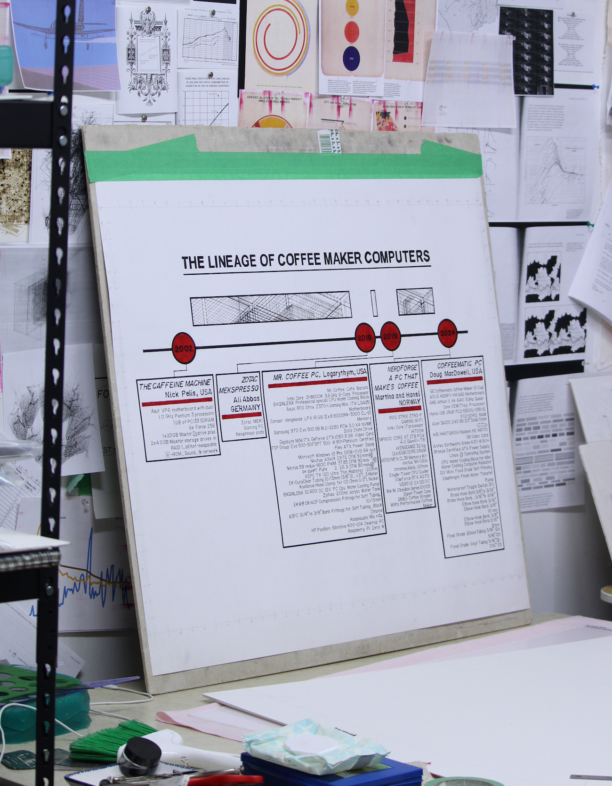
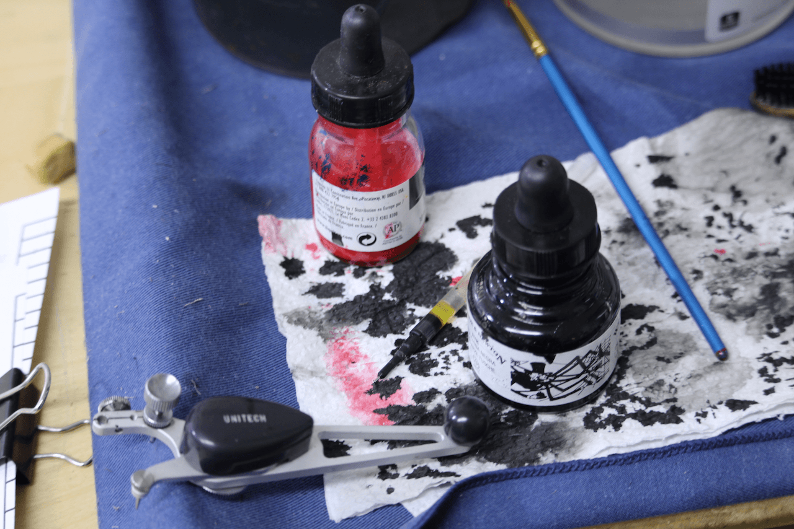

The Lineage of Coffee Maker Computers
A hand drawn timeline of the lineage of coffee maker computers by Doug MacDowell artist
The lineage of coffee maker computer builds spans 22 years with a
curious 15 year gap in the middle.
This hand drawn timeline shows the lineage of coffee maker computers. There are a
total of 5. In 2002 Nick Pelis built the first ever coffee maker
computer named
The Caffeine Machine. Then, the builds went cold for 15 years until 2018, when a person
named Ali “THE CRE8OR” Abbas collaborated with a company named Zotac
to make the
Zotac Mekspresso
to feature in a trade show. One year after in 2019, a man whose
username is Logarythm made the
Mr. Coffee PC. This unassuming build is perhaps my favorite. 5 years later, after
COVID-19, NerdForge, a youtube channel specializing on fun builds,
built a
"PC that makes coffee". During this time I was making
Coffeematic PC.
 